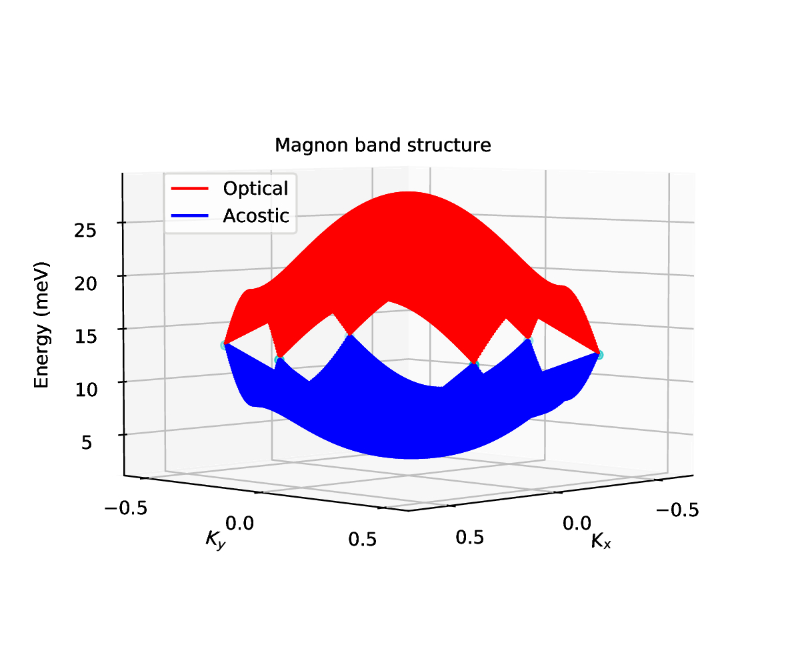
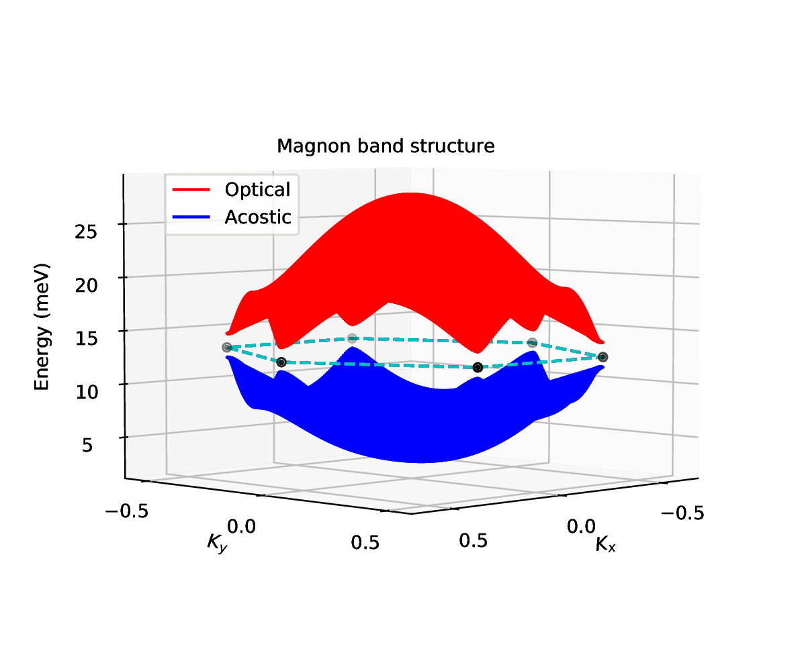
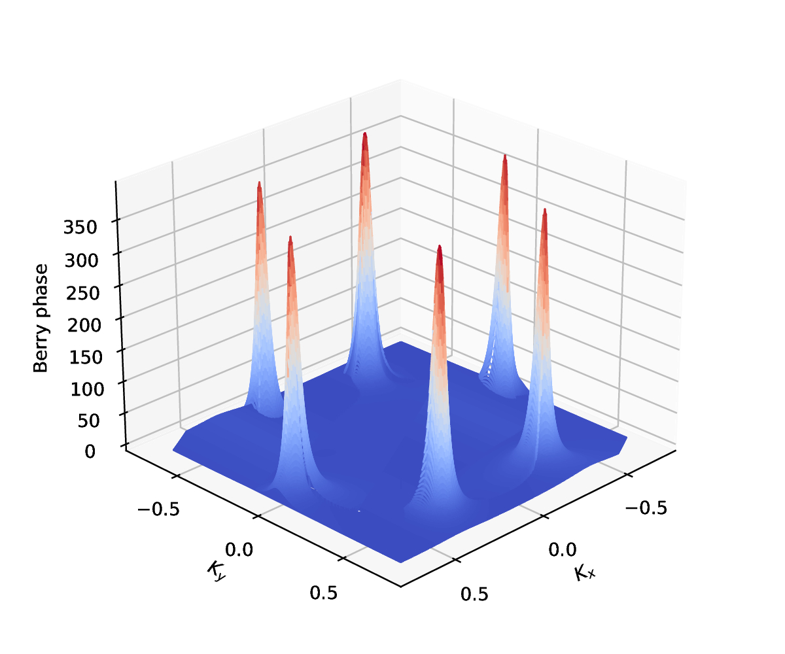
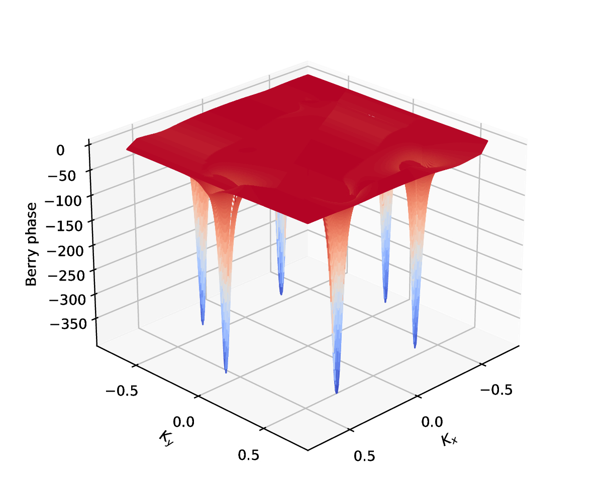

Thermal Hall Effect (THE)


Nowadays, two-dimensional magnetic materials are playing an increasingly important role. However, since they are relatively new, it is not clear how to calculate their magnonic topological properties or evaluate the Curie temperature. This workflow has been implemented to address these values using a quantum mechanics approach and statistics. Parallelization techniques have been employed to reduce the computational time required for these calculations.

